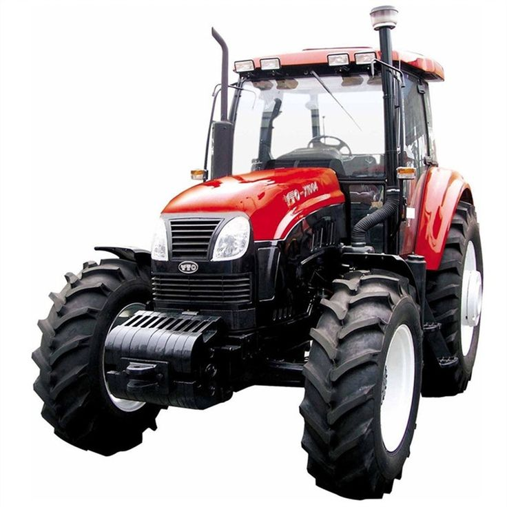
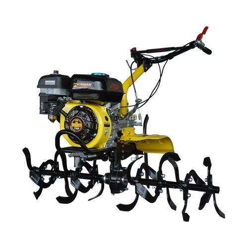

Toko Intani
XX pengikut

Traktor Roda 4
Deskripsi
Kendaraan bermesin diesel membalikkan dan mencacah tanah sebelum memulai masa tanam.
{kind=link}

Mesin Penggembur Tanah
Deskripsi
Alat yang dilengkapi pisau rotari untuk menghancurkan bongkahan tanah pada lahan.
{kind=link}

Benih Kedelai Anjasmoro
Deskripsi
Memiliki ukuran biji yang seragam dan kandungan protein tinggi, cocok untuk industri tempe dan tahu.
{kind=link}

Benih Tomat Servo F1
Deskripsi
Tomat tipe determinate yang berbuah lebat dengan bentuk buah bulat dan keras.
{kind=link}

Biji Bawang Merah (TSS)
Deskripsi
True Shallot Seed (TSS) yang bebas virus dan menghasilkan umbi bawang merah berkualitas tinggi.
{kind=link}

Sayur Bayam Hijau
Deskripsi
Bayam petik kualitas super yang bebas pestisida kimia, sangat baik untuk konsumsi harian keluarga.
{kind=link}

Alpukat Mentega Super
Deskripsi
Kualitas premium dengan biji kecil. Cocok untuk konsumsi langsung maupun bahan minuman sehat.
{kind=link}

Wortel Medan Segar
Deskripsi
Wortel berkualitas tinggi yang dicuci bersih, memiliki tekstur padat dan sangat baik untuk jus atau sup.
{kind=link}

Pupuk Urea Nitrogen
Deskripsi
Mempercepat pertumbuhan daun dan batang, membuat tanaman terlihat lebih hijau dan rimbun.
{kind=link}

Pupuk NPK Mutiara 16-16-16
Deskripsi
Mengandung unsur hara makro yang lengkap untuk menjamin kesehatan tanaman secara menyeluruh.
{kind=link}